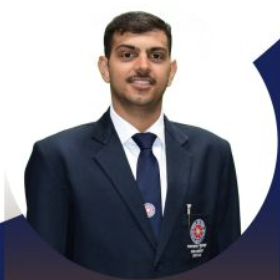

Welcome to NSS-NSUT CELL
Engaging students in service to the community and nation.
Welcome to the NSS NSUT Website!
Dear NSS Family and Friends,
We are thrilled to welcome you to the official website of the National Service Scheme (NSS) at Netaji Subhas University of Technology. Our mission is to empower students through meaningful community service, fostering a spirit of social responsibility and leadership.
At NSS, we believe in the power of volunteerism to create positive change in society. Whether you're a current volunteer, a prospective member, or simply someone interested in learning more about our initiatives, we invite you to explore our site and discover the numerous opportunities for involvement.
Thank you for visiting, and we look forward to your active participation in our programs!
Warm regards,
NSS NSUT
Messages from Our Leaders
Message from the Vice Chancellor

Dear Students,
It is with great pride that I extend my greetings to all members and supporters of the National Service Scheme (NSS) at Netaji Subhas University of Technology. The NSS plays a pivotal role in shaping the character of our students, instilling in them a sense of social responsibility and a commitment to community service. The essence of NSS lies in its mission to engage students in various social initiatives, empowering them to contribute to the welfare of society. Through their tireless efforts, NSS volunteers embody the values of compassion, leadership, and selflessness. I am continually inspired by their dedication and the positive impact they create within our community. I encourage all students to actively participate in NSS programs. Not only will you have the opportunity to serve others, but you will also develop invaluable skills and forge lifelong friendships. Together, let us cultivate a culture of service and make a lasting difference in the world around us. Thank you for your commitment to the ideals of NSS. Your efforts are instrumental in making our university a beacon of hope and change.
Warm regards,
Prof. Anand Srivastav
Message from the Program Coordinator

Dear NSS Volunteers and Supporters,
Welcome to the NSS NSUT Cell! It is an honor to serve as your Program Coordinator and to work alongside such a passionate and dedicated group of individuals committed to making a positive impact in our society. The National Service Scheme is not just a program; it is a movement that empowers students to step beyond the classroom and engage with real-world challenges. Through various initiatives—be it environmental conservation, community health, or education—we strive to cultivate a spirit of service and leadership among our volunteers. Our NSS activities are designed to foster a sense of responsibility, teamwork, and empathy. Each project presents an opportunity for you to learn, grow, and contribute to the well-being of our community. I encourage you all to embrace these experiences wholeheartedly and to bring your unique talents and ideas to our initiatives. Together, we can create meaningful change and inspire others to join our mission. Let us work hand in hand to uphold the values of service, dedication, and integrity that NSS stands for. Thank you for your commitment to the NSS NSUT Cell. I look forward to witnessing the incredible work we will accomplish together.
Best wishes,
Dr. Praveen Saroha
Message from the Founding President
Dear NSS Family,
As the Founding President of the NSS NSUT Cell, it fills me with immense pride to witness the incredible journey we have embarked upon together. From our humble beginnings to becoming a vibrant community dedicated to service, the evolution of our cell reflects the passion and commitment of each member. NSS is not merely an organization; it is a way of life that encourages us to give back to society and strive for a better tomorrow. Our initiatives, whether focused on environmental sustainability, social outreach, or educational empowerment, are a testament to our shared vision of making a difference. I urge each of you to embrace the spirit of service that lies at the core of NSS. Your involvement is not just about fulfilling a duty; it is about cultivating empathy, leadership, and a deep understanding of the challenges faced by our communities. Together, we can inspire change and foster a culture of service among our peers. As we move forward, let us continue to support one another, innovate in our approaches, and amplify our impact. I am excited to see how each of you will contribute to our mission, carrying forward the legacy of NSS at NSUT. Thank you for your dedication and hard work. Together, we can achieve remarkable feats!
Warm regards,
Anuj
Message from the President

Dear NSS Family,
It is an honor to serve as the President of the NSS NSUT Cell, a role that allows me to witness the incredible dedication and enthusiasm of our members firsthand. Our cell has consistently aimed to make a meaningful impact on our community, and it is heartening to see how each of you contributes to this vision. NSS is not just about organizing events; it's about fostering a spirit of selfless service and community engagement. Each initiative we undertake, whether it’s a cleanliness drive, awareness campaign, or educational program, reflects our commitment to social responsibility and the well-being of those around us. I encourage all members to take an active role in our projects and embrace the opportunities for personal growth and leadership that come with them. Together, we have the power to create change and inspire those around us, reinforcing the values of empathy, teamwork, and resilience. As we continue this journey, let us remain united in our mission to serve and uplift our society. I am excited about the potential we have to make a lasting difference and am grateful for the support and camaraderie within our NSS family. Thank you for your unwavering commitment and enthusiasm. Together, let's strive for excellence in our endeavors and continue to shine as torchbearers of change!
Warm regards,
Raman Yadav